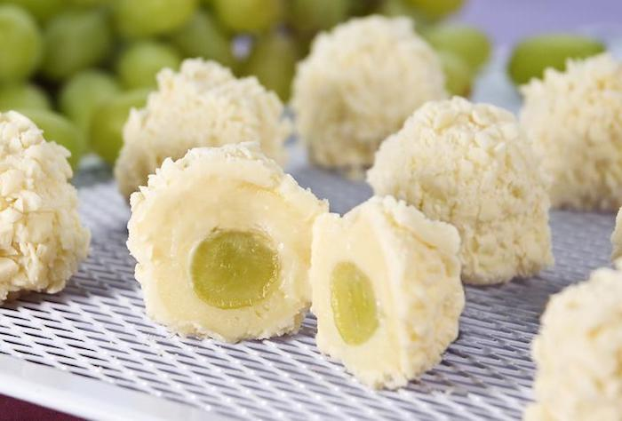

Uma torta de maçã, no Brasil, ou tarte de maçã, em Portugal, é um doce cozido no forno recheada de maçãs. Na região Sul do Brasil, existe a cuca, de origem alemã, também com recheio de maçãs, mas também com outras frutas tal como goiaba, figo, pêssego e outras frutas ou mistura dessas.
conheça a receita!